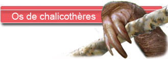
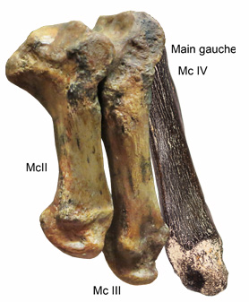

Un étrange animal!

Faisons connaissance avec l'un des animaux les plus étranges et les plus emblématiques des faluns.
 Les doigts ont évolué en crochets et les dernières phalanges sont caractéristiques. Chaque phalange terminale montre un os fendu et courbé sur lequel devait s'insérer une griffe. On pense que l'animal devait utiliser ces doigts pour attirer les branches des arbres vers sa bouche. Le revers de cette adaptation est l'impossibilité d'utiliser normalement les pattes avant pour marcher à cause de la longueur des ongles. Les doigts ont évolué en crochets et les dernières phalanges sont caractéristiques. Chaque phalange terminale montre un os fendu et courbé sur lequel devait s'insérer une griffe. On pense que l'animal devait utiliser ces doigts pour attirer les branches des arbres vers sa bouche. Le revers de cette adaptation est l'impossibilité d'utiliser normalement les pattes avant pour marcher à cause de la longueur des ongles.
Le chalicothère déambulait donc en reposant gauchement sur le revers de sa main. En fait la position réelle de la main ne fait pas l'objet d'un consensus. Il est envisagé que les pates de devant reposaient sur le dos des doigts à la manière des gorilles, ou bien une posture encore plus improbable sur la tranche de la main.
Au coeur du mécanisme...
Et puis cet os long assez abimé mais qui correspond assez bien à un métacarpe IV de la main gauche d’un chalicothère (le doigt extérieur).

-Les éléments permettant ce rapprochement sont :
-Le métacarpe semble « vrié», ce qui s’accorde bien avec la position de ce doigt.
-Une extrémité proximale atrophiée avec une surface de contact avec le MC III qui développe une extension osseuse qui «l’enveloppe».
-Une sorte de crête longitudinale sur la face dorsale de la diaphyse de l’os.
-Une «boule» articulaire qui s'enroule depuis la face dorsale jusqu’à celle ventrale. Elle permet une vaste amplitude de rotation à l’intérieur de la fosse articulaire de la première phalange.
-On devine 2 dépressions entourant la boule articulaire sur la face avant.
Certains critères sont moins probants :
- L’os est un peu cintré par rapport aux représentations des Mc IV de la littérature, mais le squelette du MNHN exposé en entrée du hall montre également un os très incurvé.
- Avec ses 145 mm, il est petit comparé aux os de Sansan (de 185 à 230 mm). Mais on sait que les femelles d’anisodon étaient significativement plus petites que les mâles. Et puis aussi dans les faluns d’Anjou Touraine, on avait déjà noté la présence d’une forme assez petite de par la taille des dents retrouvées.
Et donc l’attribution de cet os à un métacarpe de chalicothère est assez convaincante.
|